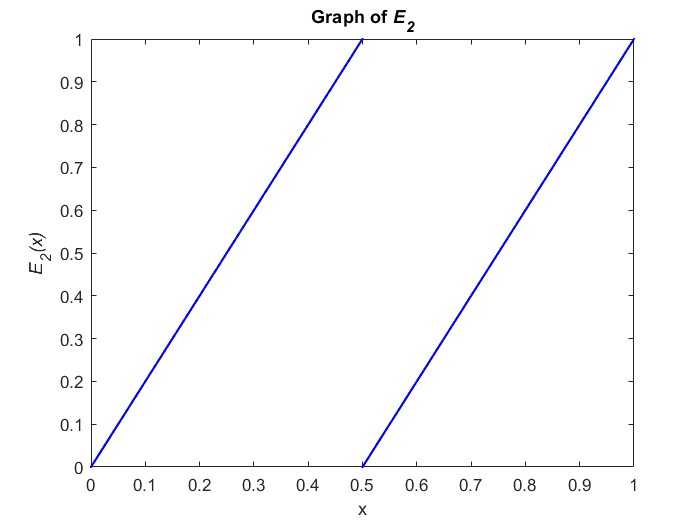
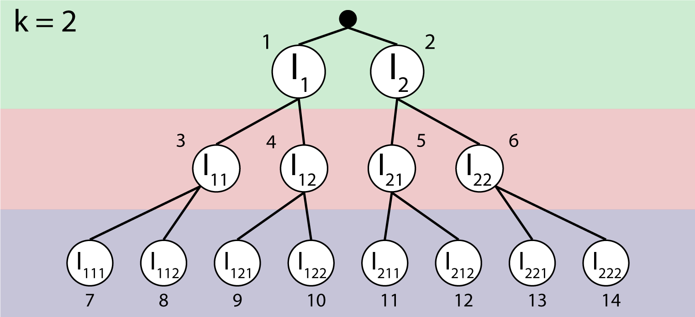

Highlights
- Built golf graphics, grid display, and vector previews from scratch.
- Created custom linear algebra classes to abstract away any complex math like vector operations and matrix operations.
- Designed a system to load custom levels from JSON, making level design easier and opening doors for small-scale modding.
- Wrote a physics system that is entirely based on vectors: gravity, wind, swing, etc. are all defined as vectors.



Team: 3 students
Role: Researcher
The main criteria for this project was its educational value: since this project had to be completed in under a month, my team's focus was on functionality over aesthetics. We decided to try to teach linear algebra to high school/college-aged students, which ended up being a much larger undertaking than expected: we spent the majority of our development time setting up systems that link vector and matrix inputs to the physics of a virtual world.
Linear algebra is a broad subject of study, meaning we struggled to decide which concepts counted as "fundamentals" in the field. We obviously needed to include vector operations, scalar operations, and basic matrix operations--but what about reflections, rotations, and scaling? Should we have players solve a system of equations? We ended up keeping the scope as tight as we felt we could while still giving a basic overview of the concepts of linear algebra: basic vector and matrix operations. This leaves lots of room for growth in the future if development were to continue on a longer timeline.